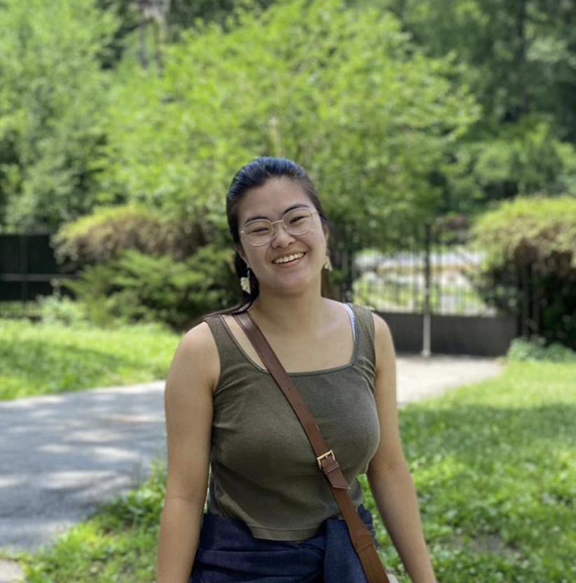

About Us

Rachel Tam
I am a senior at Brown studying Gender and Sexuality Studies + Biology.
I am the student coordinator for BURP (Brown University Relaxation Project)
which is a student group that trains volunteers to provide free massages.
I wrote a gender and sexuality studies honors thesis this year on
Crisis Pregnancy Centres in Rhode Island, focusing on how they operate
and the nationwide networks of CPCs in the US.
Mona Malone
Hello, my name is Mona, and I am a junior currently pursuing a degree in Ethnic Studies.
My primary focus is on health disparities and how various systems of power interact
with access to care. My interest in this field has led me to explore the
use of oral histories and archival work to better understand the experiences
of marginalized communities. Currently, I am working on a project related to
mental health and anti-policing, which involves examining the impact of law
enforcement on mental health outcomes in vulnerable populations.